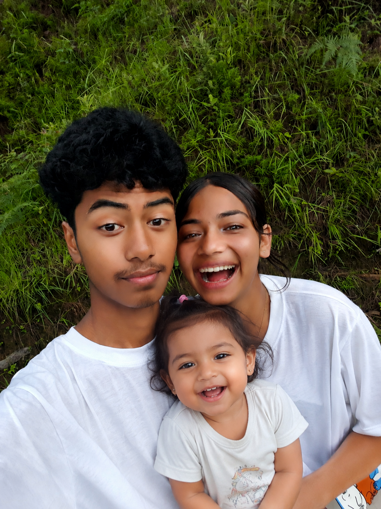

I am always a overthinking boy.
In evry situation my tears speaks more then me.😆
My heart only beats for that one girl whom I use to call Sanu.🥰
Sometimes I make you cry, eyes full of tears, sad and feel alone also...😔
But my heart didn't get intension of making you sad and alone my bebe🤞
No matter what I will always be by your side my bebe.😇 Hola sometimes I make fault but I always regret it trully.😢
Sorry for everything bebe I didn't wrote this overthinking I just wanna know that you are safe, secure, loved, cared by your boy.🥰

I just want a litle family with you happy, sweet, and loving one.😍
Will you make it happen for our baby girl "Sazina"😘
Love you soo muchhhhhh forver my bebe, sanu, budi, kanxi, nakalli and my everything.....😘😍